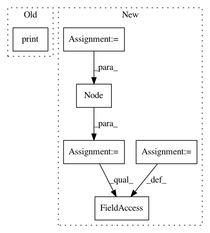

6903d95b41206d757540f48230e245e7f28b8667,data_structures/AVL/AVL.py,AVL,rotate_right,#AVL#Any#,119
Before Change
node.left = aux
print(node.parent.label)
print(node.parent.right.label)
print(node.parent.left.label)
def double_rotate_left(self, node):
self.rotate_right(node.getRight().getRight())
After Change
def rotate_right(self, node):
aux = node.parent.label
node.parent.label = node.label
node.parent.left = Node(aux)
node.parent.left.height = node.parent.height + 1
node.parent.right = node.right
def double_rotate_left(self, node):
self.rotate_right(node.getRight().getRight())
In pattern: SUPERPATTERN
Frequency: 3
Non-data size: 6
Instances
Project Name: TheAlgorithms/Python
Commit Name: 6903d95b41206d757540f48230e245e7f28b8667
Time: 2017-10-02
Author: rafaelleru95103@gmail.com
File Name: data_structures/AVL/AVL.py
Class Name: AVL
Method Name: rotate_right
Project Name: dPys/PyNets
Commit Name: e0c9d018aca7bf05486c385484d5ed1c37bac423
Time: 2018-10-13
Author: dpisner@utexas.edu
File Name: pynets/diffconnectometry.py
Class Name:
Method Name: coreg_mask_to_diff
Project Name: dPys/PyNets
Commit Name: e0c9d018aca7bf05486c385484d5ed1c37bac423
Time: 2018-10-13
Author: dpisner@utexas.edu
File Name: pynets/diffconnectometry.py
Class Name:
Method Name: coreg_WM_mask_to_diff